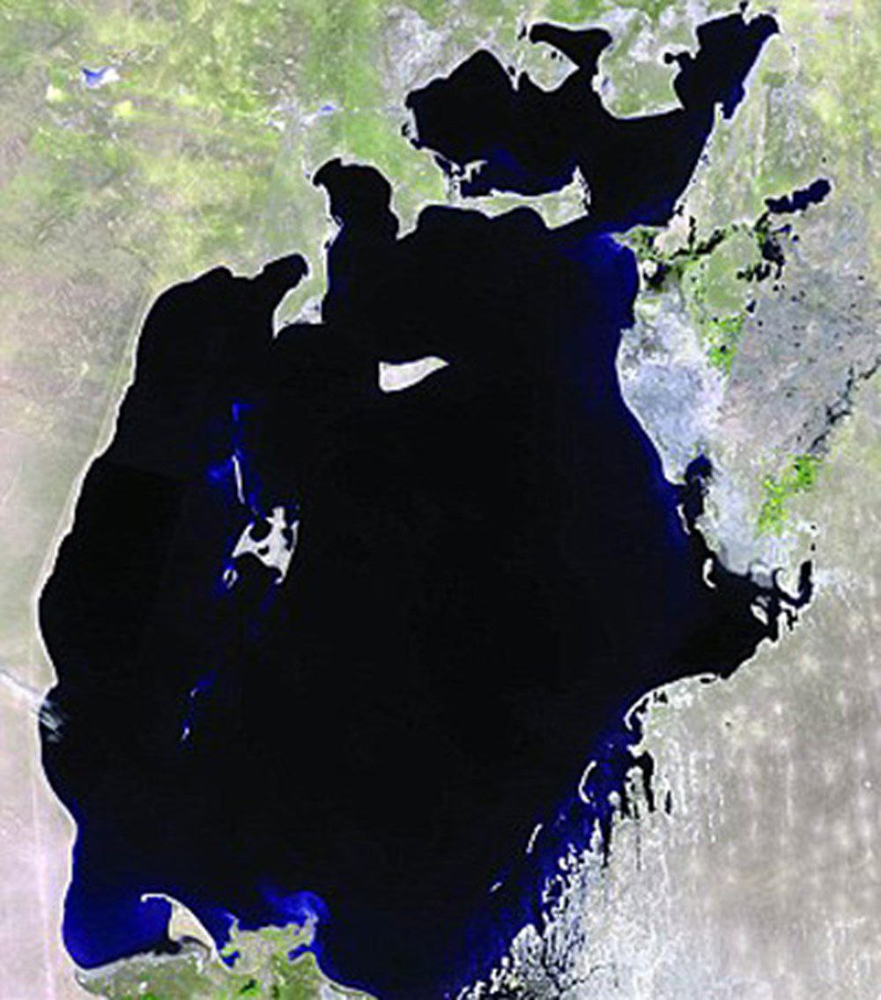
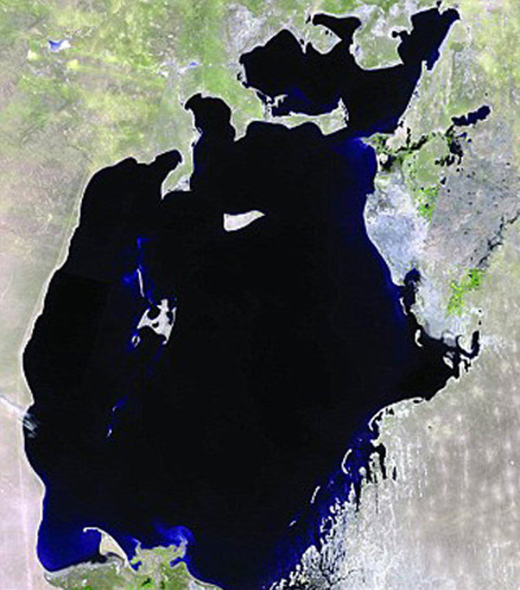

About Aral Sea
Ladies and gentlemen, Today I want to speak about something very important — the Aral Sea. This sea was once full of life. Now it is almost gone. The land is dry. The air is dirty. The weather is too hot in summer and too cold in winter. People are suffering. But we can change this. We must save water. We must build smart irrigation systems. We must protect our nature. This is not only a problem for Kazakhstan or Uzbekistan. This is a problem for all of us — for Central Asia, for the world. The United Nations says we have only 5 years before a big water crisis begins. But I believe we still have time. If we work together, we can save our future. Let’s act now. Let’s protect our water. Let’s bring life back to the Aral Sea. Thank you.
 
